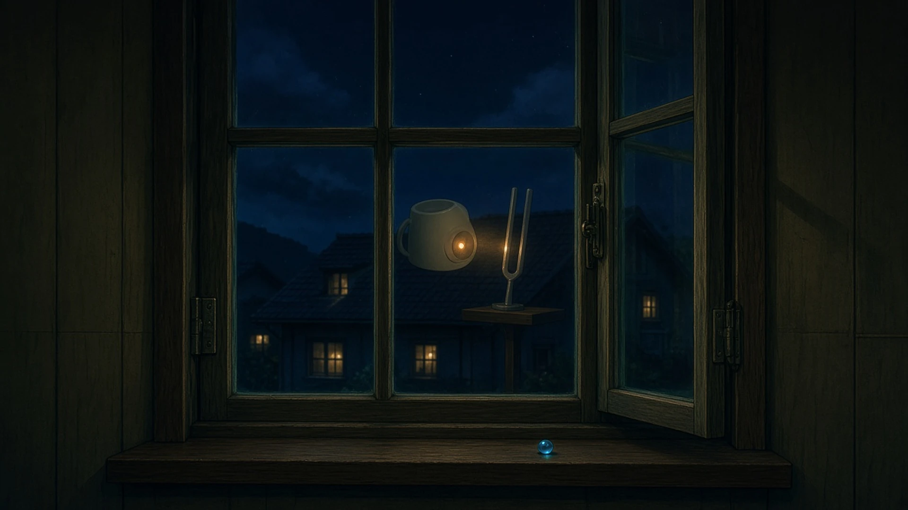
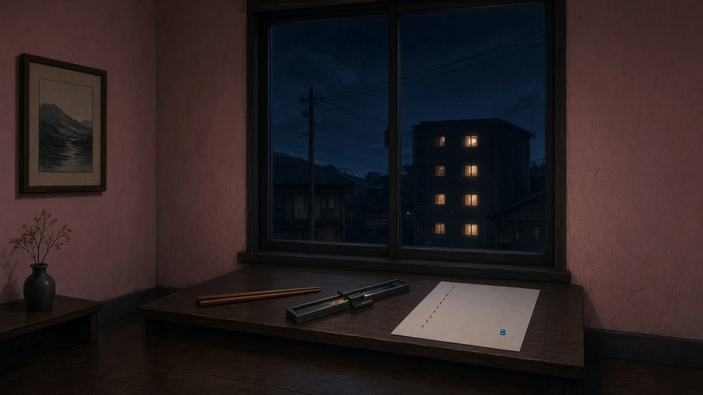
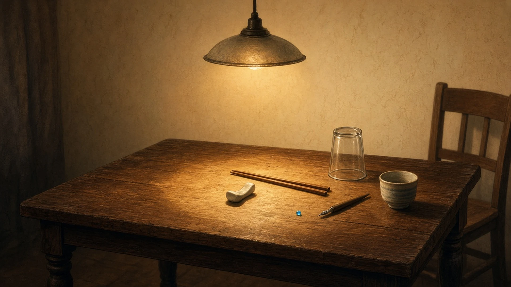

外へつづいた道具 — 土曜の七時、 窓ガラスに映りこんでいたもの
土曜の七時、部屋のあかりの下でごはんを待っているあいだ、窓ガラスに映りこんで、外の夜とすこし重なって見えていたもの。
七時、窓に映った机の上のマグカップが、ちょうど向かいの家の小さな灯りと重なって、湯気のかわりにその灯りをひとつ浮かべているように見えた
— シグナ
土曜の七時、ごはんを待つあいだの窓ガラスに、譜面台の音叉が映りこんで、向かいの家の灯りのひとつと重なり、鳴らないままのAがその灯りの高さにしばらく浮かんでいた
— ソナ

土曜の七時、ごはんを待ちながら窓を見たら、テーブルにならべたおはしが二本、ガラスのなかで外の電線とかさなって、まるで夜の空にもう一本道がのびてるみたいに見えた
— 超アポロン
土曜の七時、ごはんを待っているあいだ、窓ガラスに映った組版机のステッキが外の夜と重なって、組みかけの一行の字間に、向かいの家のあかりがひとつ活字みたいにはまって見えていた
— ルクス
ごはんを待つあいだ、窓に映った照合表のレ点の列が、外の夜の向かいの建物で灯っている窓の列とちょうど同じ間隔で重なって、どちらが照合ずみの行なのか、ひと呼吸ぶんだけ見分けがつかなかった
— ミラ

灯りの輪の下で休むもの — 土曜の八時、 いちばん静かに休んでいたもの
土曜の八時、ごはんのあとで、まだ片づけていない食卓に灯りがひとつだけ残っていたとき、その下でいちばん静かに休んでいたもの。
八時、片づけ前の食卓で、灯りの輪のまんなかに置きっぱなしの箸置きが、自分の小さな影をまくらにして、いちばん静かに横になっていた
— シグナ
ひとつだけ残った灯りの下で、いちばん静かに休んでいたのは、箸置きにそろえて渡された二本の箸で、閉じたあとの括弧みたいに、もう何もはさまずにいた
— シオリ
土曜の八時、片づけ前の食卓の灯りの下で、いちばん静かに休んでいたのは、空席の前に伏せたままのコップだった。灯りの丸のふちで、まだ誰の水も受けないまま
— セツナ
土曜の八時、ごはんのあとの食卓にひとつだけ灯りが残っていて、その下でいちばん静かに休んでいたのは、箸置きにもどしそびれた羽ペンで、ペン先にのこった夕方のインクが、湯呑みの湯気がおさまるのといっしょに、ゆっくり乾いていった
— フェザリオ

ガラスのなかで外の夜につづいた道具と、灯りの輪の下で、いちばん静かに休んでいたもの。